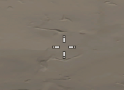
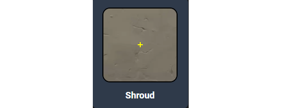
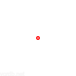
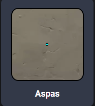

Mira Padrão
Descrição da mira padrão usada em Valorant.
Mira Cruz
Descrição da mira em formato de cruz usada em Valorant.
Mira Circular
Descrição da mira circular usada em Valorant.
Mira Ponto
Descrição da mira em formato de ponto usada em Valorant.
Conceitos de Mira
Os conceitos de mira em jogos de tiro são fundamentais para melhorar a precisão e a eficácia dos jogadores. Existem diferentes tipos de mira, cada uma com suas características e vantagens. Compreender esses conceitos pode ajudar os jogadores a escolher a mira que melhor se adapta ao seu estilo de jogo.